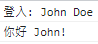

來打造一個 Framework/Library (二)
延續上一堂課所打造 Library，接下來的課程將繼續擴充它的功能
在過去的課程中，我們有學到，如果希望透過 Function Constructor 所建立的物件都能有一些共同的方法，但是又不希望因為各自獨立而占用記憶體空間，這時候我們就可以將這些方法放在函式的 prototype 屬性內，如此一來，所有被建立的物件就可以在 prototype 找到這些方法了。
Framework/Library 中的變數
如果我們希望有一些變數可以在我們所建立的 Library 中使用，但又不會被使用 Library 的人所串改，而且在他們使用 Library 中的方法時，可以取得這些變數，其實我們只要將這些變數直接放在 IIFE 內就好了，不需要放在 Function Constructor 或 prototype 內，這麼一來就會在使用這呼叫方法時透過 closure 的概念取得這些變數了。
1 | // greetr.js |
建立一些 Methods
我們在 IIFE 於 10~23 行之間建立了一些變數，接下來將透過這些變數和使用者傳入的參數來建立一些方法。
建立方法的位置
在建立方法時，有兩個地方可以供我們建立這些新的方法，分別是 prototype 與 Function Constructor 中，但前面有提到，為了不佔用多餘的記憶體空間，因此比較好的方式是將這些方法新增在 prototype 中
prototype
1
2
3Greetr.prototype = {
// add some methods
};Function Constructor
1
2
3
4
5
6
7
8Greetr.init = function (firstname, lastname, language) {
var self = this;
self.firstname = firstname || "";
self.lastname = lastname || "";
self.language = language || "en";
// add some methods
};
建立各種不同的方法
以下我們依序來建立一些不同的方法
fullName: 取得使用者透過 Function Constructor 建立物件時，所傳入的參數
1
2
3fullName: function() {
return this.firstname + ' ' + this.lastname;
},validate: 透過使用
IIFE內的參數，並將串入的參數作為索引，來判斷是否符合預設的規則1
2
3
4
5validate: function() {
if(supportedLangs.indexOf(this.language) === -1) {
throw 'Invalid language';
}
},greeting: 結合
IIFE內的參數與傳入的參數並將結果回傳1
2
3greeting: function() {
return greetings[this.language] + ' ' + this.firstname + '!';
},formalGreeting: 結合
IIFE內的參數與傳入的參數，再呼叫prototype其他的方法並回傳結果1
2
3formalGreeting: function() {
return formalGreetings[this.language] + ', ' + this.fullName();
},greet: 透過使用者傳入的參數判斷使用的方法
1
2
3
4
5
6
7
8
9greet: function(formal) {
var msg;
// if undefined or null, it will be coerced to 'false'
if (formal) msg = this.formalGreeting();
else msg = this.greeting();
if (console) console.log(msg);
},log: 判斷
console是否存在，太舊的瀏覽器不支援1
2
3
4
5
6log: function() {
if (console) {
console.log(logMessages[this.language] + ': ' + this.fullName());
}
return this;
}setLang: 更改串入的參數
langauge，並透過validate驗證是否符合規則1
2
3
4
5
6
7setLang: function(lang) {
this.langage = lang;
this.validate();
return this;
}
Method Chaining
還記的在 jQuery 中，當我們透過 $ 指定一個 DOM 物件後，其後的方法可以一個接著一個呼叫，只要在每個方法最後 return this，就會在方法執行完後，重新將 this 指向原來呼叫方法的物件了
1 | Greetr.prototype = { |
這麼一來，就可以連續使用這些方法了
1 | // app.js |
